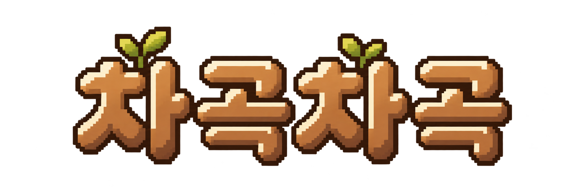

A새싹이 자라는 글자
글자의 존재감을 살리고 장식을 줄인 방향. 밝은 하늘 위에서 가장 가볍고 자연스럽게 이어집니다.
로고 단독


데스크톱 홈 배너
1280px 앱 화면 · 한눈에 비교하도록 축소 표시
기존 픽셀 숲 배너와 함께 비교하는 두 가지 독립 로고입니다. 데스크톱과 모바일 모두 배너에는 보조 문구 없이 로고만 배치했습니다. 실제 앱과 기존 에셋은 변경하지 않았습니다.
글자의 존재감을 살리고 장식을 줄인 방향. 밝은 하늘 위에서 가장 가볍고 자연스럽게 이어집니다.

1280px 앱 화면 · 한눈에 비교하도록 축소 표시
오두막과 연결되는 목재 간판 방향. 밝은 간판 바탕과 진한 글자로 배경과의 대비를 확보했습니다.
1280px 앱 화면 · 한눈에 비교하도록 축소 표시
추천: A안. 기존 배너 자체에 오두막과 꽃 등 볼거리가 충분해, 새싹 글자형이 공간을 덜 차지하면서 브랜드를 또렷하게 보여주는 방향입니다. 간판 자체의 존재감과 오두막 분위기를 강조하고 싶다면 B안이 어울립니다.
한글 네 글자는 생성 이미지를 직접 열어 확인했습니다. PNG의 원래 투명도와 픽셀 표현을 유지하며, 배너 이미지·높이·버전 위치는 그대로 사용합니다. 배치 시안은 기존 앱 HTML/CSS를 복사하고 스크립트와 저장 접근을 제거한 화면입니다. 아래 학습 목록은 빈 정적 상태로 남아 있을 수 있습니다.
배치 크기: 데스크톱 A 300px/B 320px(배너 가용 폭에 따라 제한), 모바일 A 56vw/B 58vw. 두 로고 모두 왼쪽 상단의 밝은 영역에 배치했습니다. 브라우저 화면 검증 여부와 프롬프트는 README.md와 prompts.json을 참고하세요.